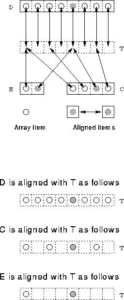

Consider,
PROGRAM Warty
IMPLICIT NONE
REAL, DIMENSION(4) :: C
REAL, DIMENSION(8) :: D
REAL, DIMENSION(2) :: E
!HPF$ TEMPLATE, DIMENSION(8) :: T
!HPF$ ALIGN D(:) WITH T(:)
!HPF$ ALIGN C(:) WITH T(::2)
!HPF$ ALIGN E(:) WITH T(::4)
!HPF$ DISTRIBUTE (BLOCK) :: T
C = 1; D = 2
E = D(::4) + C(::2)
END PROGRAM Warty
This is very similar to an earlier example which demonstrated stride array alignment. This time, however, all the arrays are aligned to a template which is then distributed. As expected, the template must be the same size as or larger in each dimension than anything that is aligned to it.

Figure 34: Visualisation of Strided Template Alignment
Figure 34 shows how each array is aligned with the template. At the bottom there is an exploded view of how each individual array relates to the template. The element from each array denoted by the shaded blob can all be seen to be aligned with T(5).